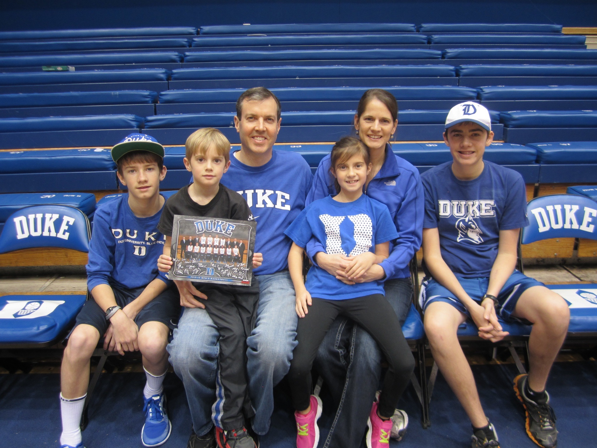
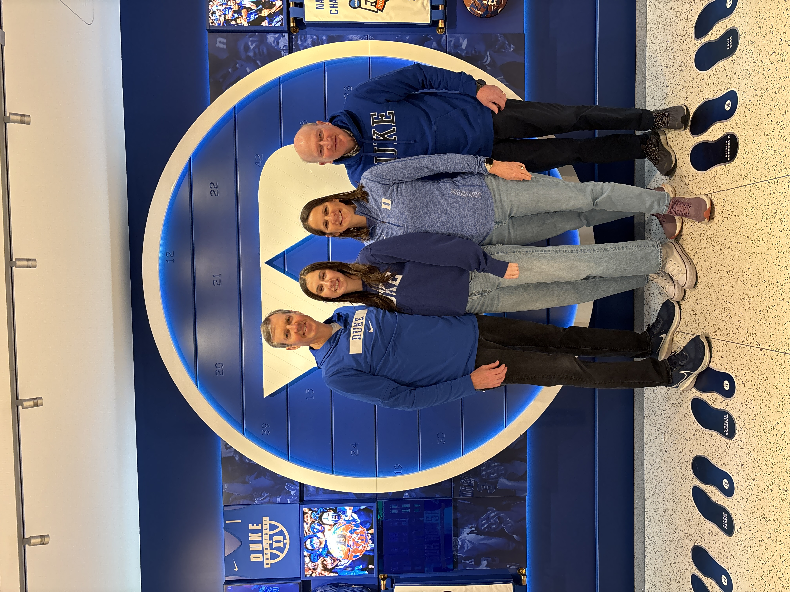

I have been a Duke basketball fan as long as I can remember. Cheering with the Cameron Crazies has become an integral part of my life. Join me for a history lesson on the greatest Men's Basketball team in the NCAA.


Duke Basketball has built one of the most storied legacies in college basketball. Under Coach Mike Krzyzewski (Coach K) the Blue Devils won five National Championships in 1991, 1992, 2001, 2010, and 2015. Over 42 years, Coach K compiled over 1,200 wins, making him the winningest coach in college basketball history before retiring in 2022. But Duke is more than trophies. Cameron Indoor Stadium is widely considered the most intimidating arena in college basketball, and the Cameron Crazies (Duke's legendary student section) are known for their costumes, chants, and relentless energy. There is nothing in college sports quite like a big game night at Cameron.
Duke is also known for its top recruiting classes, year after year. Here are some of the top players:
- Cooper Flagg:
- 2025 Top NBA draft pick
- AP, Naismith, and Wooden National Player of the Year
- Paolo Banchero:
- 2022 #1 overall draft pick
- 2023 NBA Rookie of the Year
- Zion Williamson:
- 2019 Top NBA draft pick
- Craziest dunks Duke has ever seen
- Jayson Tatum:
- One-and-done at Duke
- Celtics Star
- JJ Redick
- All-time leading scorer in ACC history
- Now Lakers headcoach
- Christian Laettner:
- Only college player on 1992 dream team
- Made The Shot
- Grant Hill:
- Two-time national champion
- 5x NBA All-Star
A key moment in Duke Basketball history was on March 28, 1992. With 2.8 seconds left on the clock, Christian Laettner hit what is widely considered the greatest shot in all of college basketball history. With mere seconds left, Laettner caught a full court pass from Grant Hill dribbled once, turned, and drained a buzzer-beating jumper to give Duke a 104-103 overtime win. Lets watch it:
Duke in March Madness
Duke has made 32 NCAA Tournament appearances, including 17 Elite Eights, 13 Final Fours, and 5 National Championships. When March comes around, Duke shows up.

Enough about Duke. Let's talk about me: Resume
Back to the top